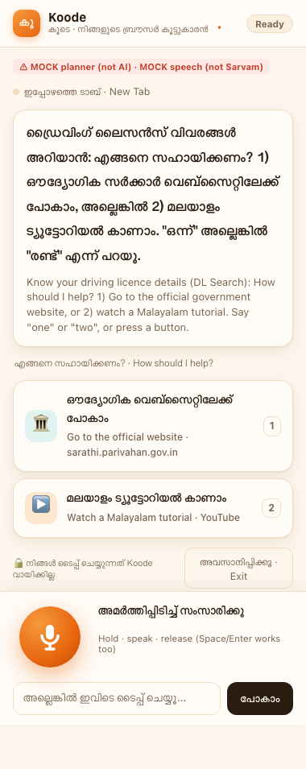
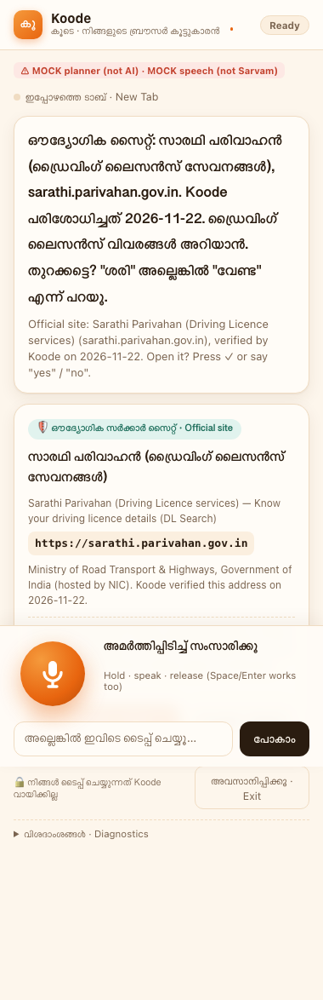
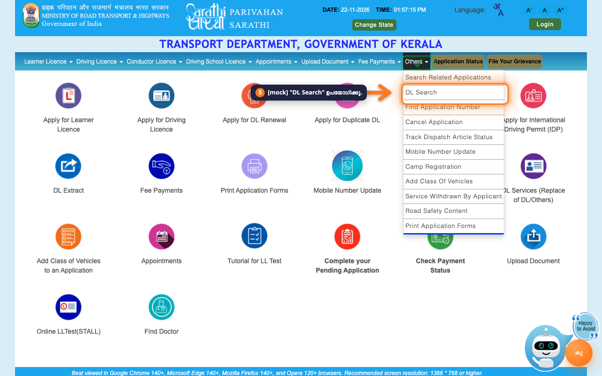
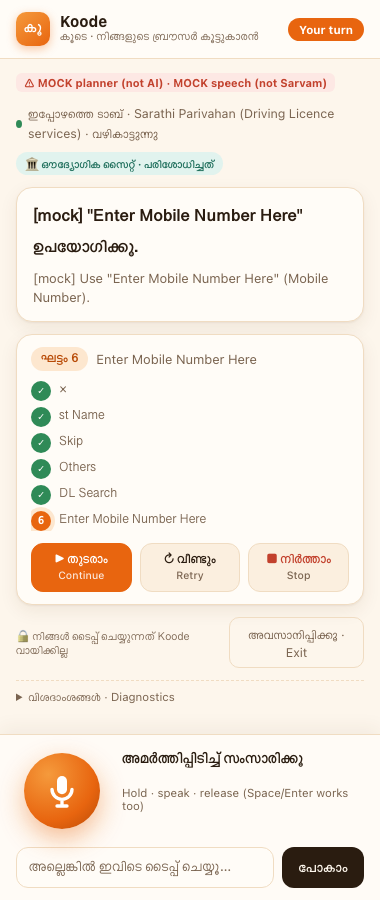

English-heavy interfaces
Labels like “Proceed”, “Compose” or “DL Extract” stop people who are confident in Malayalam but not in English menus.
വെബ് ഇനി നിങ്ങളുടെ ഭാഷയിൽ.
A Malayalam-first AI companion that helps you navigate websites, discover services, and get things done with confidence.
Koode points and explains. You click, type and decide — it never logs in, pays or submits for you.

Why Koode
Renewing a licence, checking an application, learning a skill, filling a form — the task is clear. The English menus, crowded portals and look-alike websites are not.
Labels like “Proceed”, “Compose” or “DL Extract” stop people who are confident in Malayalam but not in English menus.
Finding the real official site — and the right link among dozens — is where people lose time, or worse, land on the wrong site.
Handing over a phone, a password or an OTP costs independence — and sometimes privacy. Koode helps you do it yourself.
കൂടെ means “with you.” Koode sits beside you: you say what you want in Malayalam, it finds where to go, points at the exact button on the real page, explains it, and checks that it worked before moving on.
How it works
A real journey: checking driving-licence details on the official Sarathi Parivahan portal.
Hold the mic and say what you need. Koode shows what it heard so you can confirm or correct it, then understands the goal — not just keywords.
“എനിക്ക് ഡ്രൈവിംഗ് ലൈസൻസ് വിവരങ്ങൾ അറിയണം”
For a service, it offers a clear choice: the official website, or a Malayalam tutorial.
Government destinations come only from a small, verified catalogue. Before opening one, Koode shows who runs it, the exact address and when it was verified — and waits for your OK. Chrome then asks for access to that one site only.

Koode reads the controls that are actually visible, picks one real element — never screen coordinates — and points at it with a Malayalam instruction. It closes popups first and follows the page as it scrolls and changes.

A step completes only when the page really changes after your action. Wrong click? Koode notices and gently corrects. Progress, Continue, Retry and Stop stay one tap away.
Captchas, OTPs and passwords are always yours to type. Before a submit or OTP step, Koode pauses with “check your details” and hands over.

Screenshots are genuine captures from Koode's automated test runs. They used the clearly labelled test planner, so instructions read [mock]; the Sarathi page is the live public portal, logged out.
What Koode does today
Speak naturally; confirm what Koode heard; hear replies in Malayalam. Typing works too.
“I want to learn coconut-tree climbing” becomes a plan: search, open a verified service, or guide you on the page.
Malayalam-first results opened directly, an English fallback that keeps Malayalam content, and an arrow to a relevant video.
Step-by-step guidance on Sarathi Parivahan (driving licence). Verified Parivahan vehicle pages opened after confirmation, with a clear hand-off.
Points at the real element on the page, re-checked live — never invented coordinates or controls.
Progress only on evidence from your own action. Wrong clicks are noticed and corrected.
Talk to Koode
On the roadmap
Planned and in development — not available in the current release.
Privacy & safety
Safety rules are enforced in code, not left to the AI.
Koode never reads what you type into fields. Passwords, OTPs and captchas are always entered by you.
Aadhaar, phone, licence and card numbers in your request are removed before any AI planner, link or saved task sees them.
Models can only choose a control from Koode's own list, a sanitised search, or a verified service. Code builds every link.
Government sites come from a small catalogue checked against the live site, with evidence and a re-check date. Unverified services are explained, never guessed.
Official sites open only after you confirm, and Chrome asks for access to that one site. Leaving the official domain pauses guidance.
Before submit, payment or OTP steps Koode pauses with “check your details”. On official sites it stops reading the page after the OTP request.
Get Koode
Koode is a Chrome extension with a small local backend that keeps your API keys and talks to the AI services. Setup takes about five minutes.
Not yet on the Chrome Web Store, and there is no hosted Koode service — you install it from GitHub and run the backend yourself.
# 1 · get the code
git clone https://github.com/AravindRKrishnan7/Koode.git
cd Koode
# 2 · store your keys (hidden prompt, macOS Keychain)
security add-generic-password -a "$USER" -s koode-groq -w
security add-generic-password -a "$USER" -s koode-sarvam -w
# 3 · start the local backend
scripts/start-judging.sh
# 4 · chrome://extensions → Developer mode
# → Load unpacked → select the extension/ folder